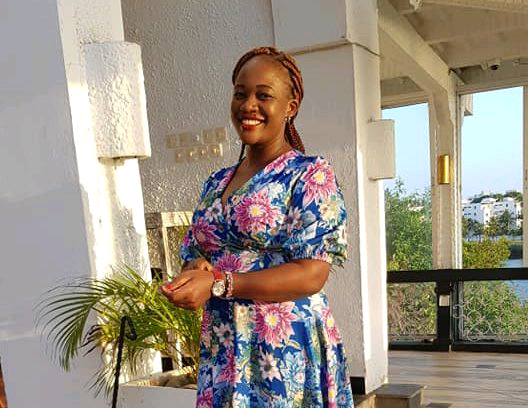

This week on the #KenyaWomenSeries, we feature a Political Scientist and Journalist with 16 years of experience; 13 of which have been in the newsroom. She describes herself as a village girl who by God’s grace continues to survive the odds that life throws at her, by utilizing opportunities and taking risks while ensuring that her life is meaningful and positively contributes to societal well-being.
She is fearless; once she was summoned to Parliament after she and a colleague wrote investigative stories exposing corruption among members of Parliament. Today, she is the Press Freedom, Safety and Advocacy Manager at the Media Council of Kenya.
Ladies and Gentlemen, a round of applause for Dinnah Ondari.
Dinnah Ondari’s career in journalism began in 2004 after graduating with a Diploma in Journalism and Mass Communication. “One year later, I got an internship opportunity at the People Daily Newspaper. Those early days of my career were the most challenging, partly because I had zero networks in the media industry. In addition, my knowledge of the city was non-existent. I recall having a hard time tracing the building where I was to report for my internship. Finally, I made my way there.
After six months of the internship, they absorbed me as a correspondent. But even the change of position did not make things any better for me. As a correspondent, salaries never came on time; however, our employer always ensured we had Ksh. 700 at the end of every week for transport to work.
Despite these financial problems, the newsroom I worked for had a vibrant environment for the development of talent. Emerging from an astute reputation as a bold weekly that delivered earth-shattering stories in the 90’s, the People Daily newspaper attracted some of the best brains in journalism whose mentorship I benefitted from as a young journalist.
Most of the senior and acclaimed journalists began their careers at this point. Out of interest to report on issues of governance, I was assigned to join the parliamentary team in 2006. This is when I made the connection between politics and life. Having interacted with legislative reporting, observed political processes and the role of media in setting the agenda on issues of governance, I felt challenged to further my education to enable me to make sense of life around me. I graduated from the University of Nairobi (UoN) in December 2009 with a double major in Journalism and Political Science.
My thirst for education took me back to UoN in 2010 to pursue Masters in Political Science and Public Administration. By this time, the financial fortunes of my employer had improved, and I had also grown through the ranks to become a Deputy News Editor. I had had a stint on TV where I did news analysis, and I led the newspapers, parliamentary team.
After more than a decade in the newsroom and having graduated with my Master’s degree in 2016, I started introspecting on the future of my career. My heart yearned for more. Even though I had previously attempted to leave the newsroom unsuccessfully, this time round the urge was overwhelming. In 2018, in my incessant search for a new job, a friend shared a job advertisement. I applied and as they say, the rest is history.
My current job has offered the challenges I had anticipated, and more, which means that the levels of satisfaction have been surpassed. Challenges push you to think, utilize your brain and explore new territories in search of solutions. My knowledge and experience in political science and journalism make it easier for me to contribute to the Media Council’s interventions in articulating policy issues and the work of media, identify and respond to gaps, and do advocacy on the same.
Having faced the challenges as a journalist myself, I respond to issues of safety of journalists and press freedom violations not only as a matter of duty but from my heart.”
1. Tell us some of your biggest accomplishments/ proud moments and the events that have shaped your career journey.
One of my proud moments in my career, which was also the riskiest, was when together with my colleague at People Daily, Anthony Mwangi, we published investigative stories about corruption among members of parliament (MPs). This earned us summons by the Speaker of the National Assembly, on the floor of the House. We were expected to appear before the powers and privileges committee to testify about our stories and name our sources.
With pressure from individual MPs and now summons staring at us, Nairobi became very small for us. But thanks to efforts by the Group Managing Editor who stood by our stories and the Media Council of Kenya who marshalled the industry to rally behind us, the summons were not executed. Looking back, I think fate was preparing me for the work I now do at the Media Council.
I later served as the Secretary-General of the Kenya Parliamentary Journalists Association (KPJA). My belief is that leadership is an opportunity to serve. Therefore, my stint at KPJA marked a new dawn for the Association as more women had started expressing interest in leading the association which articulates the interests of parliamentary journalists as far as the relationship between parliament and media is concerned.
My deputy was also a lady and I am glad this trend has continued. The KPJA office was able to expand freedom of expression within the association as well as spearhead cooperation and respect between parliament and members, which is critical in creating a conducive working environment for journalists working in parliament.
2. Given an opportunity to advise young women who want to establish themselves as journalists, what would you tell them?
Like politics, journalism is not a walk in the park and especially for women journalists. There will be challenges that threaten to overwhelm you, such as wrong assumptions and generalizations/stereotypes and sexual harassment. But all these can be overcome with the right skills, passion, determination, positive attitude, integrity and prayer.
Often, opportunities come dressed in gowns that look like work, do not doubt your ability to cope. Most of the challenges you face come from people who are scared of your mere potential.
